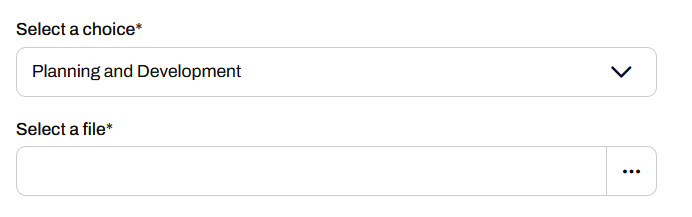
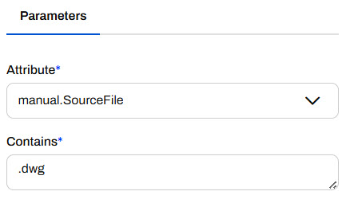
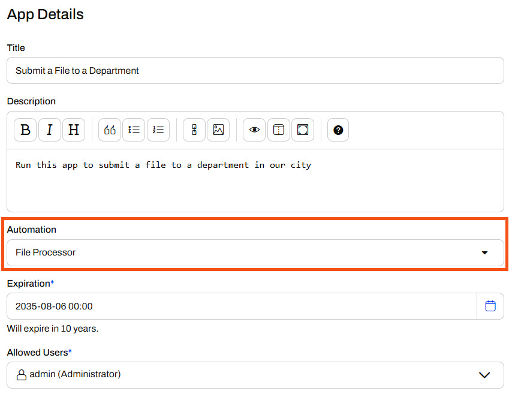
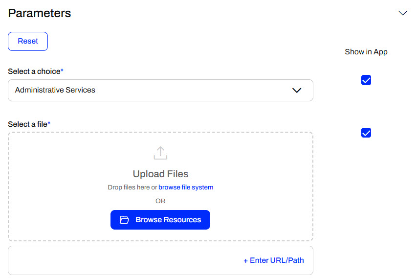
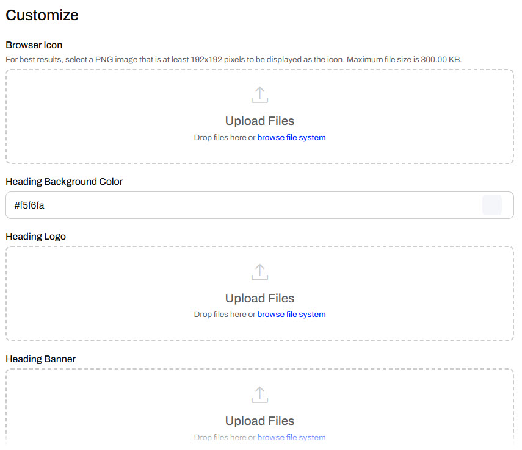
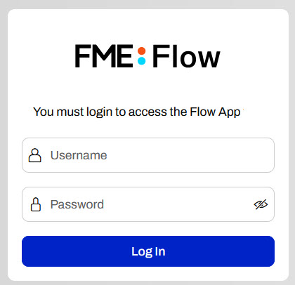
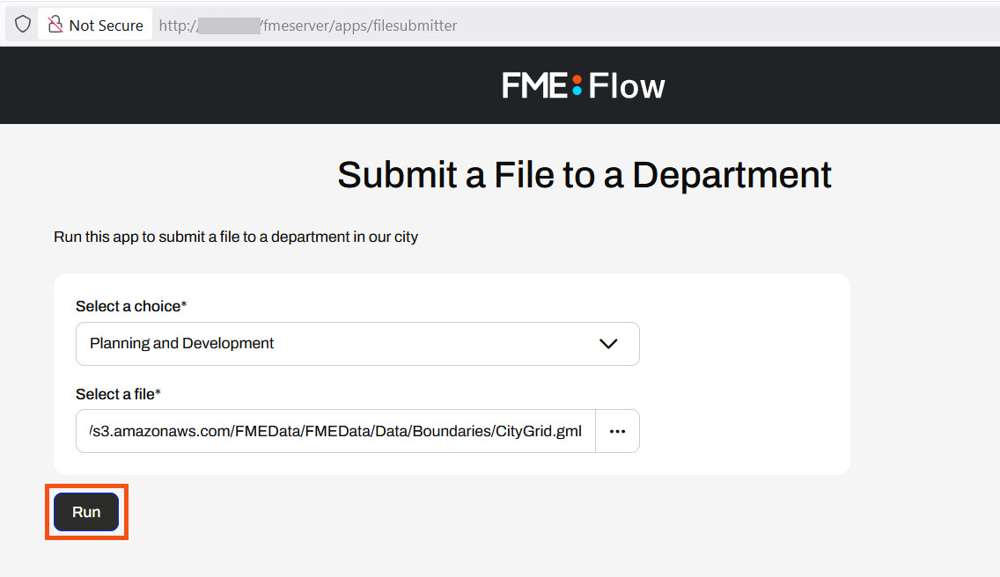

This lesson takes a slight detour into Flow Apps to cover Automation Apps. For more training on Flow Apps, see Create No-Code Web Apps.
After completing this lesson, you’ll be able to:
This lesson takes a slight detour into Flow Apps to cover Automation Apps. For more training on Flow Apps, see Create No-Code Web Apps.
FME Flow Apps are no-code web applications that let you access FME functionality without any FME experience. They simplify the user experience by turning technical workflows into easy-to-use web forms you can access and share with a URL. Automation Apps allow you to trigger and control input to a pre-built Automation from the web application.

To use an Automation in an Automation App, your Automation must use a Manual Trigger. Manual Triggers do not respond to external events and instead trigger Automations on demand. Automation Apps send messages to Manual Triggers to kick off the Automation.

The only Parameter to configure for a Manual Trigger is the Prompt for JSON on Trigger option. This option allows you to enter JSON input into Automation when you manually trigger it from the Automations canvas. It is usually unnecessary for Automations you plan to trigger through Automation Apps.

Manual Triggers have unique Output Attributes called Manual Parameters. Manual Parameters are customizable attributes that you create to take input into your Automation. To add and edit Manual Parameters for an Automation, you must open the Manual Trigger Details. In the Output Attributes tab, you'll see Manual Parameters nested under Success.

You click Manage to open the Manual Parameters Editor, where you create Manual Parameters. Like User Parameters, there are many options for different types of input to your Automation, depending on your workflow.

The Manual Parameters Editor displays the list of parameters on the left side and the properties for individual parameters on the right.

When you create an Automation App, these parameters are displayed on the app's web page for users to enter their values.

To use the input values in your Automation, you reference Manual Parameters in downstream actions like any other Output Attributes and Automation Parameters. All Manual Parameters begin with the prefix manual.

You create Automation Apps just like any other Flow Apps, by filling out a form with your app details, the Automation you'd like to run, any default parameter values, and customizing the look of your app. To access the form, expand Flow Apps in the side menu and select Create Automation App.

For the Automation option, you'll only be able to select Automations on FME Flow that have a Manual Trigger.

Unlike Workspace Apps, which may be publicly accessible, Automation Apps require FME Flow users to log in to FME Flow to access the app due to the complexity of Automations. Using the Allowed Users parameter, you should select the users and roles to access your app.
Once you select an Automation, the Parameters section populates with the Manual Parameters you created in the Manual Trigger. You may set default values for the parameters and optionally hide them from the app so the end-user cannot alter the default value for the parameter.

The last section to create your app is the Customize section. You can add icons and banners and change the app's colors to remove the default FME Flow branding and match your organization. Ultimately, you can make Flow Apps look like they don't use FME Flow at all.

For more information on customizing apps, see our Flow Apps documentation and/or the Getting Started with FME Flow Apps tutorial.
Once you create your app, FME Flow displays the app URL and some security information. You can click the URL to open the app in a new tab or copy it to share.

To access an Automation App, you need to go to the app URL in a web browser with access to FME Flow. If you are not logged into FME Flow, you must log in to see the app page.

Once the app loads, enter your parameter values and click Run.

FME Flow will display a message at the top right of the app indicating whether the Automation triggers successfully or not.